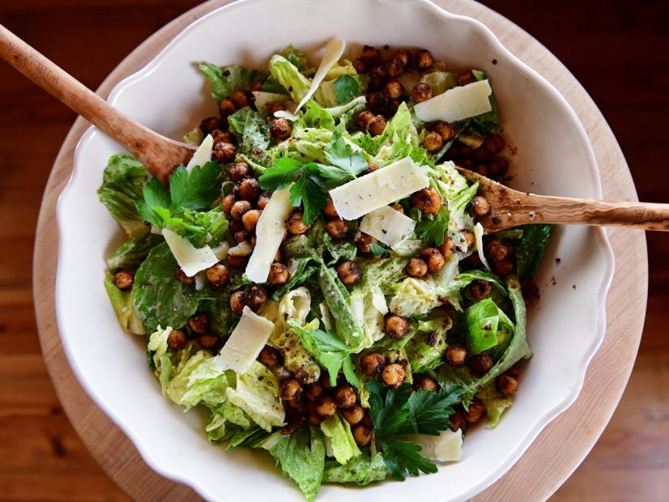

Convenience Caesar

Description
The fried chickpeas are amazing and totally amp up the salad.
The combo of pesto with store bought caesar dressing makes this such an easy yet flavorful salad.
(When cooking the chickpeas, a taller pot will help contain the splatter).
Ingredients
- 1/3 cup olive oil
- One 15-ounce can chickpeas, drained and rinsed
- 1 teaspoon chili powder
- 1/2 teaspoon garlic powder
- 1/2 teaspoon kosher salt
- 1/2 teaspoon freshly ground black pepper
- One 32-ounce bag chopped romaine (6 to 7 cups)
Dressing
- 1 cup store-bought Caesar dressing
- 3 tablespoons store-bought pesto
- Freshly ground black pepper
- 1/2 teaspoon chili powder, optional
Garnish
- Parmesan, for shaving
- Fresh parsley leaves
Steps
- Heat the olive oil in a pan over medium heat.
Add the chickpeas and season with the chili powder, garlic powder, salt and pepper and cook, shaking the pan occasionally, until crisp, about 12 minutes.
- For the dressing: Add the Caesar dressing to a bowl. Stir in the pesto, black pepper to taste and chili powder, if using. Set aside.
- Add the romaine to a large bowl. Add the dressing and toss to coat. Place on a platter, then drain the chickpeas on a paper towel-lined plate.
- Sprinkle the crispy chickpeas over the salad while they are still hot. Shave over the Parmesan and scatter the parsley leaves, then enjoy.